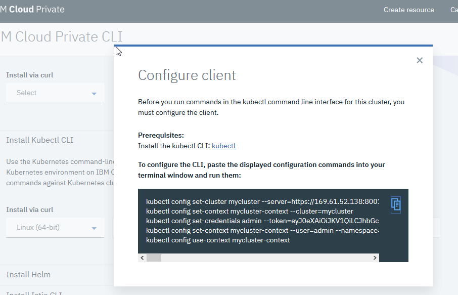
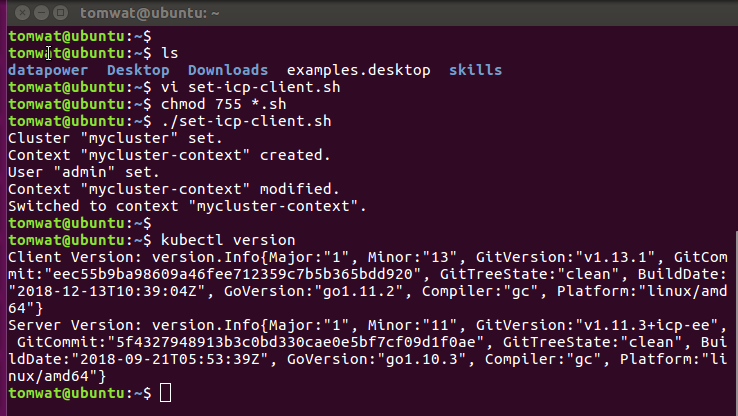

Dave Krier ICP 311 instructions:
https://ibm-icp-coc.github.io/ICP-311-Install/
Notes:
1. I went with 1 master node and 1 worker node. Each configured as 8vcpu and 32gb RAM.
2. take your time and switch back and forth between master and worker config. I got into some kind of ssh issue because I went too fast
Set my Kuberntes client to IBM Cloud Private kubernetes config:
Go to the ICP GUI, and select "Configure Client"
On your client, run the script "set-icp-client.sh" in my HOME dir
kubectl:
helm:
Removed my helm client version 2.12.0 by deleting /usr/local/bin/helm and removing my $HOME/.helm directory
Install via curl using instructions on GUI
Both server and client Helm is version 2.9.1.
Note:
Tiller is typically installed into a Kubernetes cluster, however, ICP already has Tiller loaded and running in ICP
See --> https://www.ibm.com/support/knowledgecenter/en/SSBS6K_2.1.0.3/app_center/create_helm_cli.html
This has implications for me since I need Helm, actually HELM over TLS, to operate over 2 different clusters...different certs and keys, for example
This has prompted me to have 2 separate config files in my $HOME dir...one to setup helm, kubectl, etc to point to IKS cluster, and another config file for ICP

